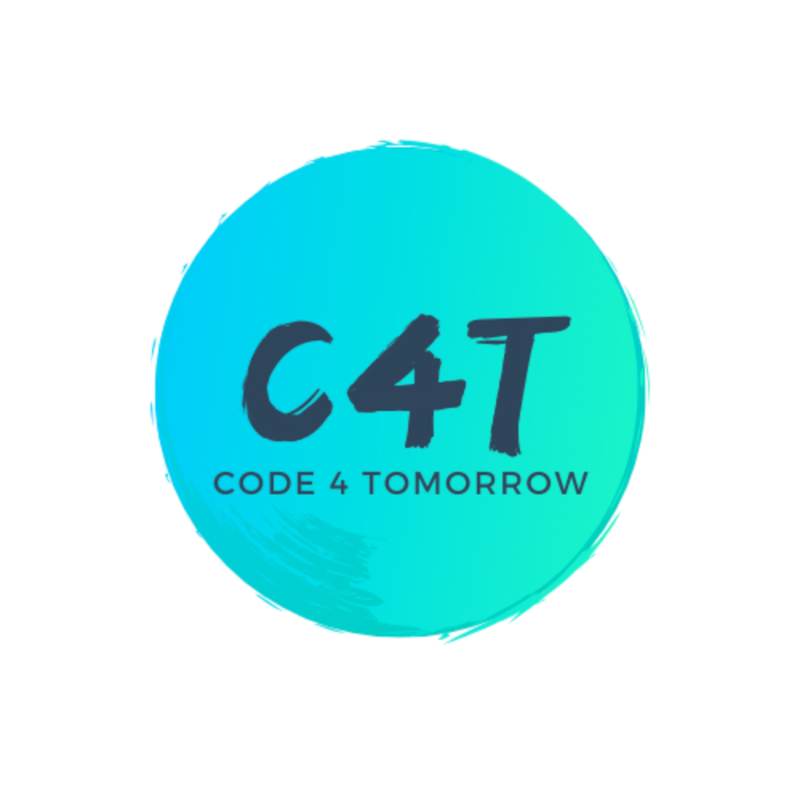
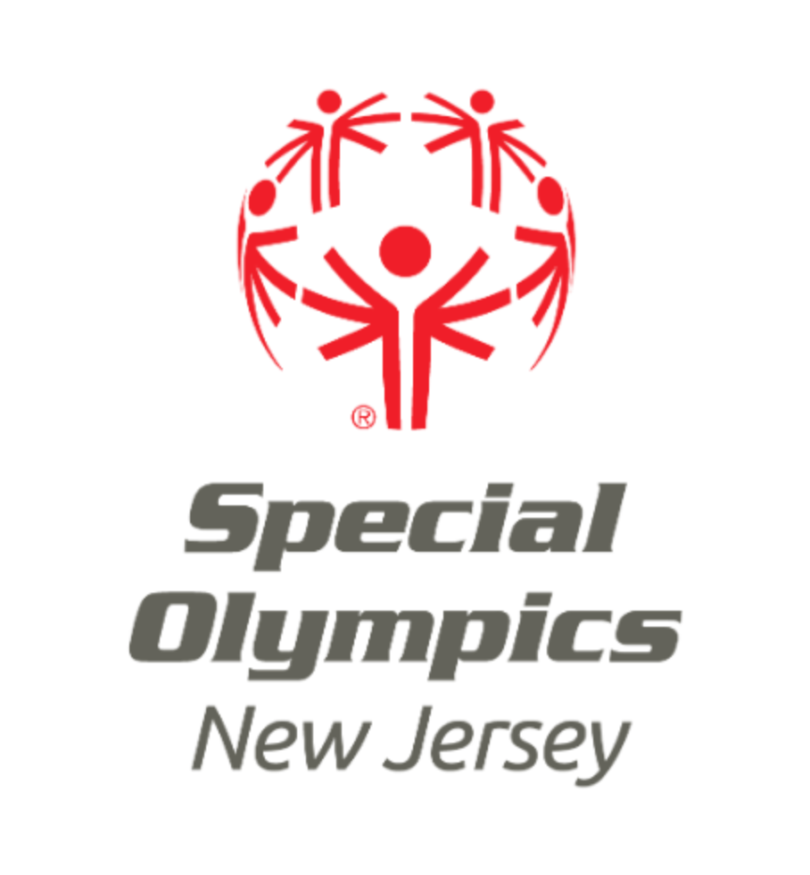
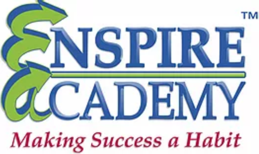

|  | I am currently the Team Lead for Scratch in a student-run 501(c)(3) non-profit organization called Code 4 Tomorrow (C4T). I have been volunteering with the C4T Team since June 2020. As a Project Lead, I manage the Scratch team, providing Scratch teachers with curriculum, and delegating tasks to be completed before project deadlines. I have conducted teacher training sessions, guiding teachers in instructing each course. I have utilized the Thinkific platform to teach a six-week course and a three-week course on how to program in Java to underprivileged children for free of charge. Additionally, I develop curriculum for the offered courses in varied difficulty levels. |
|  | In freshmen year of high school, I participated in Viking Volunteers, a club dedicated to volunteering at different places around the state. Through Viking Volunteers, I volunteered at the Special Olympics Stadium in New Jersey, encouraging and cheering on runners during the Jingle All the way 3K event. I volunteered at this event for the majority of the day on December 8, 2019. |
|  | I am an intern at Enspire Academy, a public speaking and confidence-building training academy. This institution helps hone students' leadership skills. As an intern, I am able to volunteer and publish articles discussing current issues around the world. I have been with Enspire Academy for 3 years, improving both my public speaking and leadership skills, and helping others do so as well. |